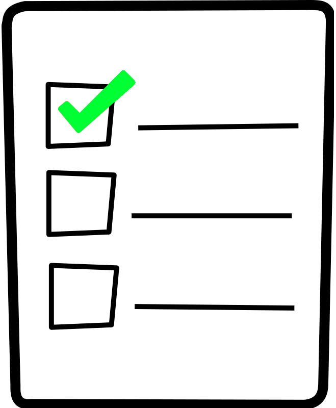

<!--
  Generated template for the ListePage page.

  See http://ionicframework.com/docs/components/#navigation for more info on
  Ionic pages and navigation.
-->
<ion-header>

  <ion-navbar>
    <button ion-button menuToggle>
      <ion-icon name="menu"></ion-icon>
    </button>
    <ion-title>Liste de courses</ion-title>
  </ion-navbar>

</ion-header>


<ion-content padding>

  <div padding>
    <button ion-button color="primary" block (click)="presentAddModal()">Créer une liste</button>
  </div>

  <ion-list>

    <ion-card *ngFor="let liste of listes">

      <ion-item-sliding>

        <ion-item>
          <ion-thumbnail item-start>
            
          </ion-thumbnail>
          <h1>{{liste.name}}</h1>
        </ion-item>
        <ion-item-options side="right">
          <button ion-button (click)="DeleteListe(liste)" color="danger">
            Supprimer
          </button>
        </ion-item-options>
      </ion-item-sliding>

      <ion-item-sliding *ngFor="let ingredient of liste.ingredients">
        <ion-item>
          <h3>{{ingredient.name}}</h3>
          <p>{{ingredient.quantity}} {{ ingredient.unit }}</p>
        </ion-item>
        <ion-item-options side="left">
          <button ion-button (click)="More(liste, ingredient)" color="secondary">
            +
          </button>
          <button ion-button (click)="Less(liste, ingredient)" color="danger">
            -
          </button>
        </ion-item-options>
        <ion-item-options side="right">
          <button ion-button (click)="Delete(ingredient)" color="danger">
            Supprimer
          </button>
        </ion-item-options>
      </ion-item-sliding>

    </ion-card>

  </ion-list>

</ion-content>
